ALECE · Documentação
ALECE · DocumentaçãoDocumentação técnica consolidada
Arquitetura, MVT/MVC, stack, domínio financeiro, diagramas, modelos de dados, segurança, deploy, qualidade e operação. Documentos técnicos consolidados e inventários de código. Snapshot de 25/10/2026: alguns itens históricos podem diferir do código atual; confira no repositório.
30 capítulos12 diagramas novos26 modelos ORM219 campos100 chamadas path literais
Capítulos por área
Produto2 capítulos · Identidade, propósito e contrato do produtoArquitetura3 capítulos · Estilo arquitetural e fronteirasDomínio financeiro7 capítulos · Glossário financeiro e invariantesModelagem de dados3 capítulos · Modelagem de dados: conceitos, relacionamentos e integridadeInterface e rotas3 capítulos · Design system e experiência responsivaSegurança2 capítulos · Segurança: ativos, ameaças e controlesOperação e deploy5 capítulos · Implantação self-hosted e infraestruturaQualidade e testes3 capítulos · Estratégia de testes: qualidade funcional e estabilidadeDecisões e roadmap2 capítulos · Decisões de arquitetura e estado das evidências
Diagramas em SVG

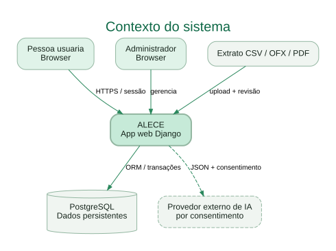

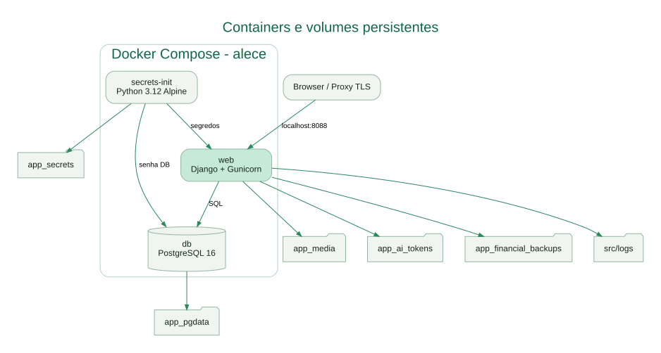

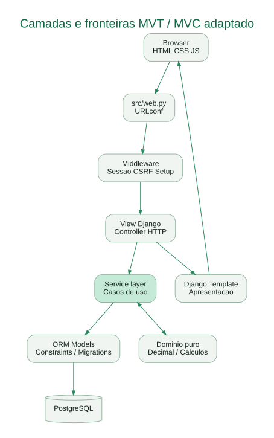

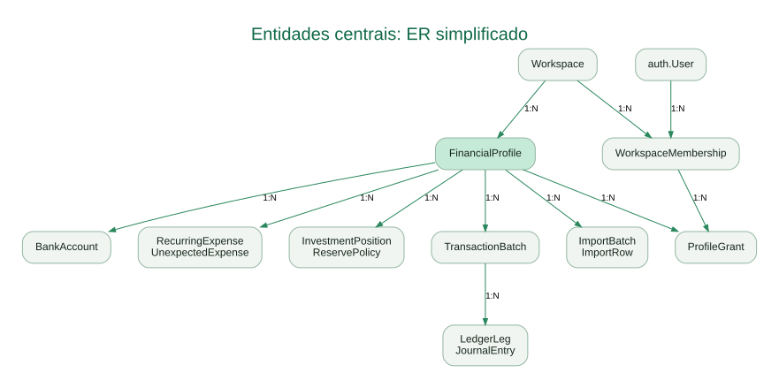

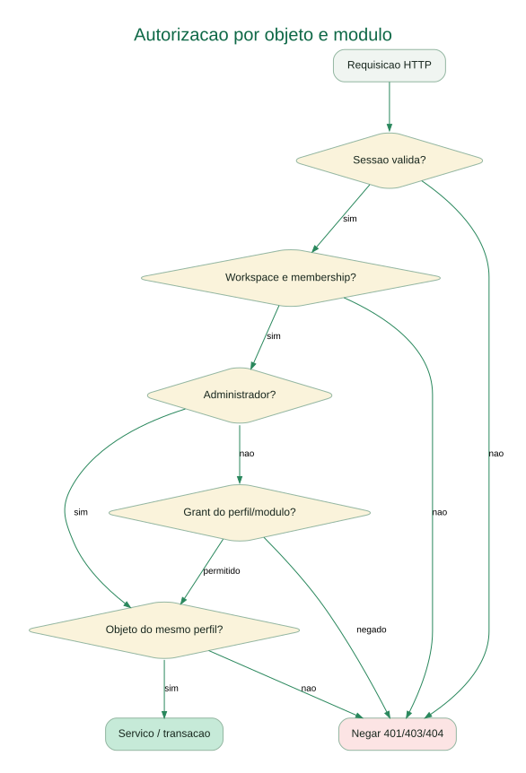

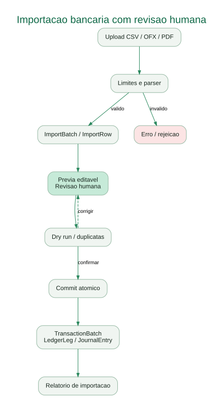

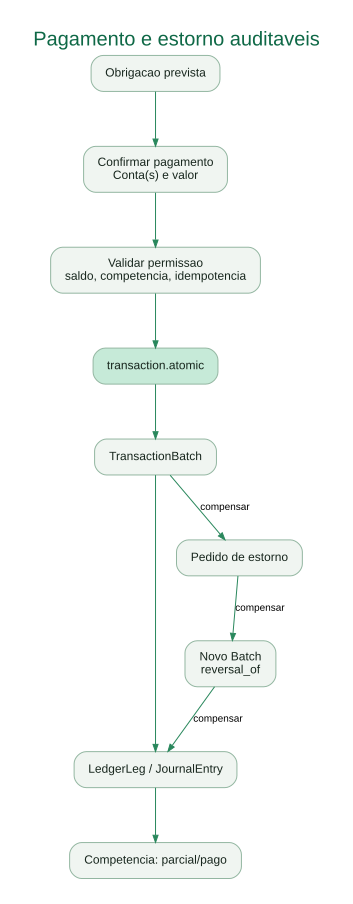

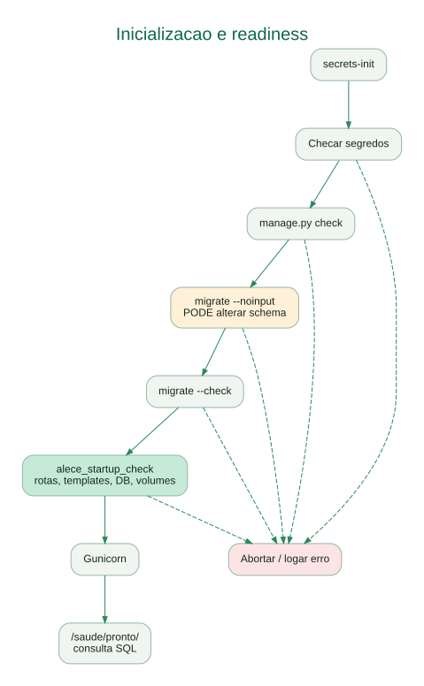

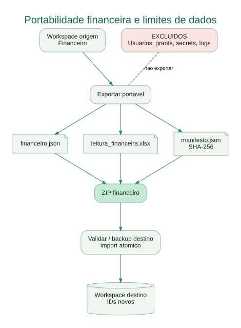

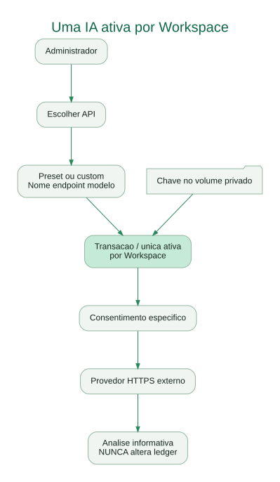

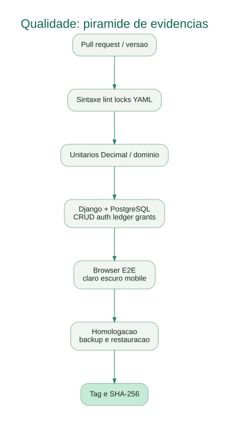

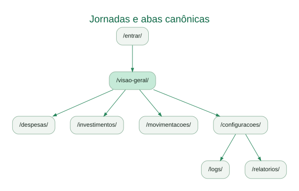